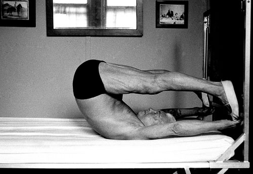

El método de Joseph Pilates
Hijo de un padre gimnasta de ascendencia griega y de madre alemana naturópata, Pilates tuvo interés desde pequeño por su cuerpo y los límites físicos que el mismo podía alcanzar, tanto de fuerza como de flexibilidad. Su método de ejercicio mezcla diversas disciplinas como la gimnasia y el yoga, pero su fuente de inspiración tuvo origen en lo más básico del mundo animal. "Lo llamaba Cronología, que tiene como fin el control de la mente sobre el cuerpo para fusionar su fuerza con su flexibilidad", cuenta Mary Bowen, la pupila de Pilates de más edad en el mundo. El método de movimiento de Joseph Pilates sobrevive ya 100 años las tendencias más recientes del sector fitness. Su doctrina del movimiento perfecto es una constante en el "sector del bienestar” con más de 500 ejercicios que refuerzan y agilizan los músculos.Establece una fuerte relación entre los movimientos de sus ejercicios y tus actividades cotidianas. Aprendes a darte cuenta de lo que haces con tu cuerpo, empiezas a moverte y vivir de forma más consciente. El método abarca una serie básica de ejercicios realizados en el suelo, y en los aparatos manteniendo un orden determinado con progresiones que debe respectarse. "Sin dolor no hay ganancia" y “agotamiento muscular” son conceptos contrarios al método Pilates original. Se hace hincapié en el desarrollo de músculos profundos y no en la masa muscular superficial. Pilates trabaja en profundidad. Todos los músculos son activados. También los músculos subyacentes y los músculos mas profundos, los cuales muchos no son conscientes y nunca los utilizan.
La Fluidez del movimiento
Cada ejercicio y movimiento es un eslabón que te lleva al ejercicio siguiente, lo cual permite que la energía fluya de un ejercicio al otro. La progresión de estos movimientos que se suceden es igual de importantes que el ejercicio en sí. Seguimiento Personal significa observar, ver y sentir lo que el cliente esta integrando para que progrese en su ritmo adecuado. Control Los ejercicios no se repiten más de 10 veces. Sin embargo, requieren una gran concentración para lograr su control, a la hora de ejecutarlos. Seguridad El nombre Pilates se ha hecho popular. Hay muchas interpretaciones comerciales de la doctrina original, que también se denominan Pilates, pero carecen de profundidad y siguen tropezándose con la superficialidad. No consiguen su objetivo y no dan resultado por lo cual el mensaje que transmiten es erróneo.
